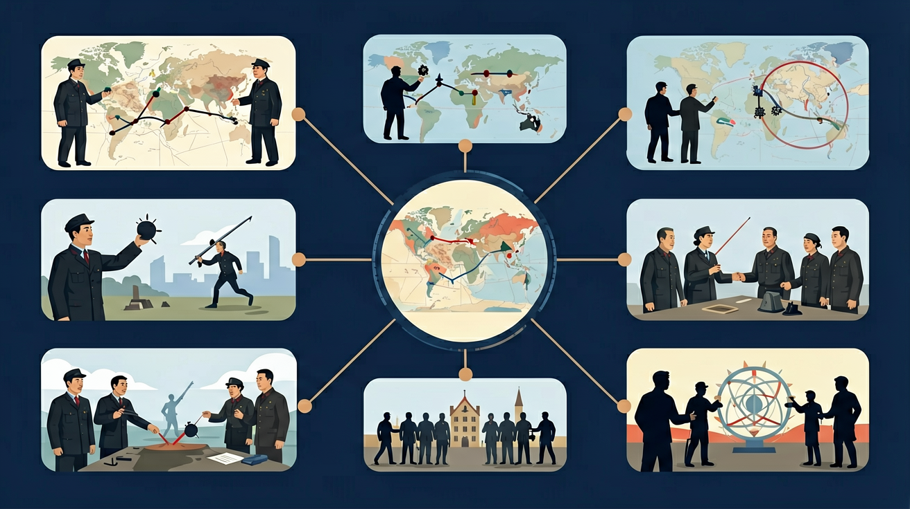
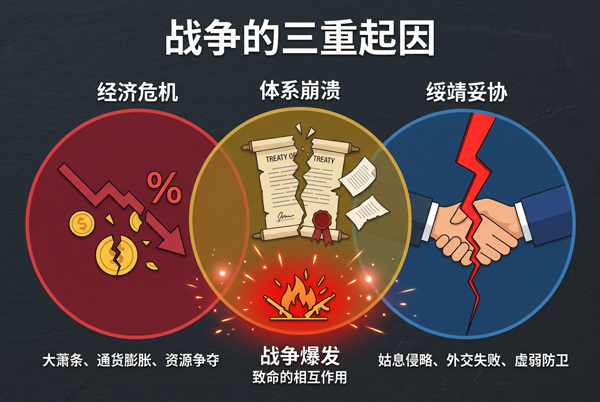
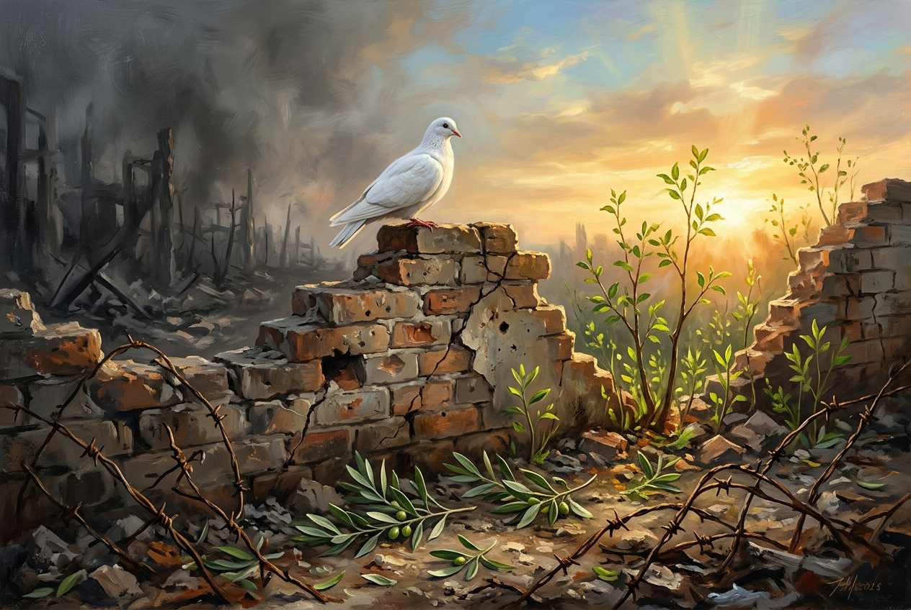

初中历史 · 世界现代史
八年级/九年级 · 课标匹配

❓ 为什么二战时德国要打那么多国家？
❓ 原子弹这么可怕，美国为什么还要用？
❓ 课本说二战是反法西斯战争，那苏联后来怎么又和美国打冷战了？
学完这一课，这些问题你都能自信地回答。
下列哪项是《慕尼黑协定》的直接后果？
太平洋战争爆发的标志是？
点击时代按钮切换疆域版图；悬停高亮边界；点击红色城市标记查看详情。


And：学生知道一战后的世界格局
But：不理解经济危机如何引发战争
Therefore：揭示二战根本诱因
1929年美国经济大萧条像多米诺骨牌影响全球。德国失业率飙升到30%，民众支持希特勒‘用战争摆脱危机’的主张。例如1933年希特勒上台后，立即撕毁《凡尔赛条约》扩军，1936年德军进驻莱茵兰非军事区，英法却选择绥靖政策。
🌍 就像班里有人欺负同学，老师不管，反而让欺负者胆子更大。1938年德国吞并奥地利时，其他国家就像‘旁观的同学’没阻止。
二战爆发的直接导火索是？
And：学生了解战争基本进程
But：分不清关键战役的战略意义
Therefore：理解战争转折逻辑链
像游戏通关需要关键道具，二战有三大转折点：1）1942中途岛海战，美军击沉日本4艘航母，就像打断对方‘游戏金币’补给线；2）1943斯大林格勒战役，德军冻死10万人，是希特勒第一次惨败；3）1944诺曼底登陆，288万盟军开辟第二战场，德国腹背受敌。
🌍 就像篮球赛最后3分钟，关键三分球+抢断+快攻能逆转比分，这些战役就是战争的‘赛点’。
下列哪场战役最早发生？
And：学生知道武器进步
But：不理解科技如何决定胜负
Therefore：认识科技与战争关系
二战是‘军事科技博览会’：1）雷达让英国在空战中提前5分钟预警，击落1733架德机；2）青霉素拯救12%受伤士兵，相当于多10个师兵力；3）原子弹直接终结战争，但广岛7万人瞬间气化。这些技术后来转为民用，比如雷达变成气象预报工具。
🌍 就像你用手机导航比纸质地图快10倍，当年雷达就是战场的‘高德地图’。
以下哪项不是二战新技术？
And：学生知道一战德国战败
But：不理解为何短短20年又爆发大战
Therefore：揭示二战爆发的深层矛盾
核心是凡尔赛体系埋下祸根。比如《凡尔赛条约》规定德国赔款1320亿金马克（相当于4.7万吨黄金），相当于当时德国10年财政收入。这导致德国经济崩溃，1923年1块面包要5000亿马克，民众仇恨为希特勒上台铺路。
🌍 就像同学A抢了B的零食还逼他写检讨，表面和解了，但B心里憋着火，后来找到机会就报复。
德国通货膨胀最严重时，买报纸要用什么装钱？
按时间轴拆解欧洲战场/亚太战场关键事件
法西斯主义特征：极端民族主义+独裁统治
对比一战凡尔赛体系与二战雅尔塔体系差异
诺曼底登陆实景地图+广岛核爆影像资料
讨论联合国成立如何防止战争再现
关于二战性质的表述正确的是
对比二战前后军事科技发展
复制提示词到 AI 学伴，生成「第二次世界大战 历史课件」的时间轴或事件提纲；也可以上传你手绘的示意图，请 AI 学伴点评。
复制后可粘贴到 AI 学伴继续对话。
先独立作答，再点选项查看对错与错因。
右图邮票纪念的事件标志着二战达到最大规模，该事件是
中国战场牵制日军主力最久的战役是
下列国际会议按时间排序正确的是
二战转折点战役：欧洲战场是____，太平洋战场是____
答案：斯大林格勒战役,中途岛海战
两个战场的决定性战役
中国远征军入缅作战的主要目的是保卫____运输线
答案：滇缅公路
当时重要国际援助通道
✅ 珍珠港前美国已通过《租借法案》援盟国
💡 忽视战事阶段性演变
✅ 巴巴罗萨行动（德军侵苏）规模更大
💡 混淆战役转折性与规模概念
口诀：德意日，轴心坏，闪击波兰掀祸害；美苏英，同盟来，诺曼底后纳粹败
类比：像校园霸凌：轴心国是欺负人的小团伙，绥靖政策就像旁观者纵容
（真题）雅尔塔会议中美英苏未达成：
若当代冲突中出现种族清洗，最可能违反：
下列科技最早用于二战的是：